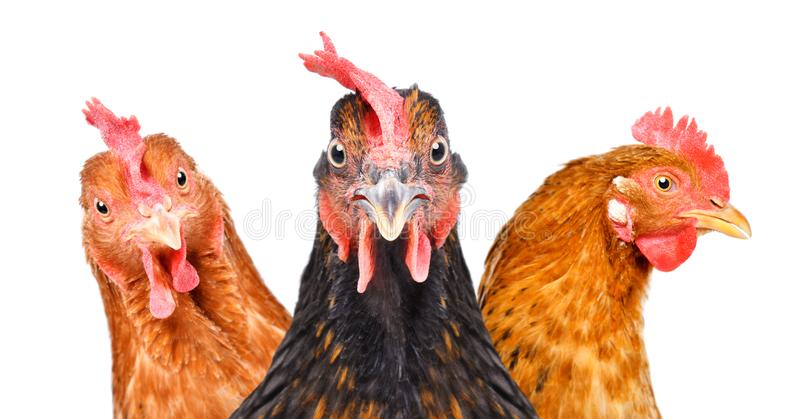
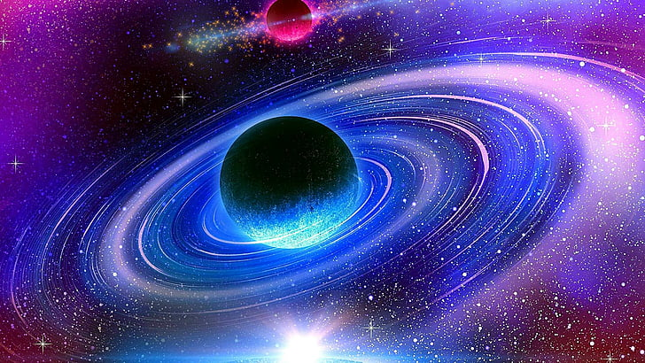

Chicken is a common domesticated bird that is widely consumed as a source of protein in many parts of the world. They are usually raised for their meat, eggs, and feathers. Chickens are adaptable creatures that can thrive in different climates and environments, from backyard coops to commercial poultry farms. They come in various breeds and colors, ranging from the small and agile bantams to the large and plump broilers. Chicken is a versatile food that can be cooked in a multitude of ways, such as roasting, grilling, frying, or stewing. It is also a popular ingredient in many cuisines, from American fried chicken to Indian butter chicken and Chinese kung pao chicken. Overall, chicken is a delicious and nutritious food that has become a staple in many households and restaurants around the world.
 How large is the universe!!!! 8/2/19The universe is a vast expanse of space that is beyond human comprehension. It is estimated to be over 93 billion light-years across and contains billions of galaxies, each with billions of stars. The observable universe, which is the part of the universe that we can see, is estimated to be around 46.5 billion light-years in all directions. This vast size is difficult to fathom, but it is a testament to the incredible complexity and beauty of the cosmos. As we continue to explore and discover more about the universe, we are constantly reminded of just how vast and incredible it truly is.
